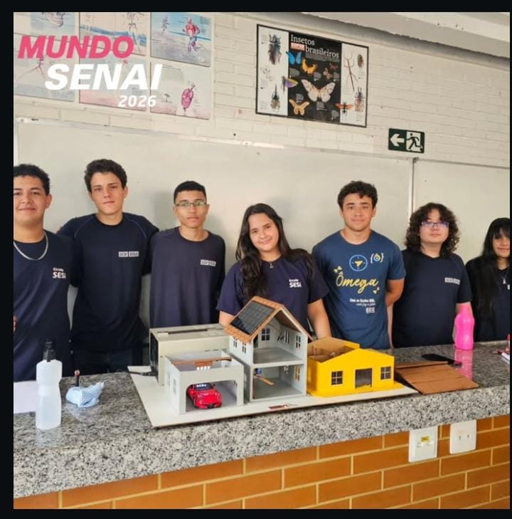

O que apresentamos
No Mundo SENAI 2026, nossa equipe apresentou uma maquete de casa inteligente para demonstrar sistemas embarcados e Internet das Coisas (IoT). O ESP32 lê os sensores, aplica as regras do programa e aciona dispositivos como luzes, ventilação e o motor do varal. O projeto também tem um painel web para acompanhar e controlar a maquete pela rede Wi-Fi.
Para quem apresentamos
Apresentamos para alunos do 9º ano de escolas públicas, familiares e instrutores.
Minha participação
Apresentei a maquete e expliquei o LED da casa, o varal automático e o sistema de ventilação.
O que aprendi
Aprendi sobre sistemas embarcados e Internet das Coisas (IoT) e a trabalhar em equipe.
Feedbacks
Muitos visitantes gostaram da inovação da maquete.
O que eu mudaria
Em uma próxima apresentação, eu daria mais espaço para o público interagir com a maquete, por exemplo, convidando os visitantes a testar seus controles.
Equipe e maquete
